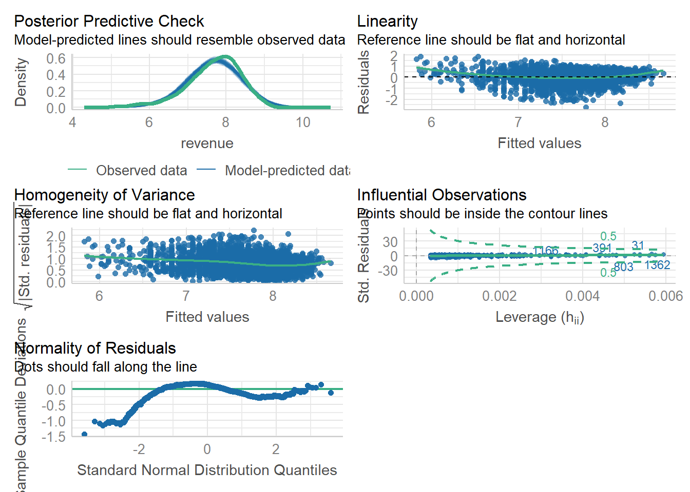
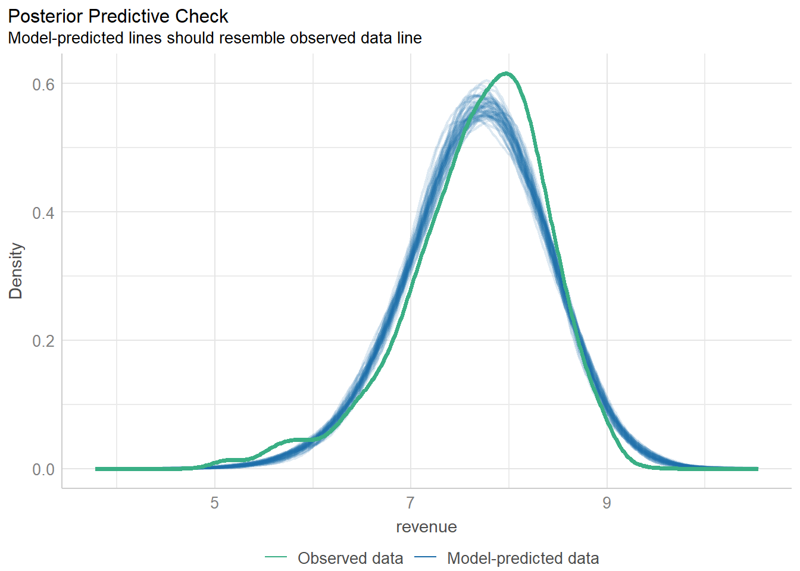
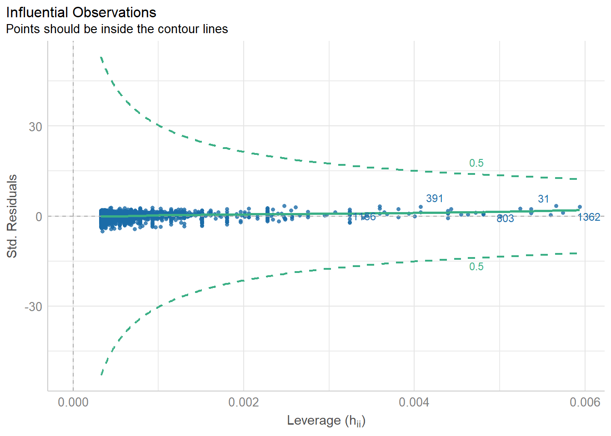

getwd()[1] "C:/Users/0131045s/Desktop/Programming/R/Workshops/rintro/activities/week7"In this weeks workshop, we are going to learn how to perform regressions (simple and multiple) which you covered in the week 5 lecture, along with checking the relevant assumptions etc.
- Conduct a linear regression in R & check your assumptions.
- Conduct a multiple regression R & check your assumptions.
- Create graphs to visualize your results
Let’s begin by ensuring your working environment is ready for today’s session. Open RStudio or Posit Cloud and complete the following tasks to set everything up.
One of the first steps in each of these workshops is setting up your *working directory*. The working directory is the default folder where R will look to import files or save any files you export.
If you don’t set the working directory, R might not be able to locate the files you need (e.g., when importing a dataset) or you might not know where your exported files have been saved. Setting the working directory beforehand ensures that everything is in the right place and avoids these issues.
Click:
Session → Set Working Directory → Choose Directory
Navigate to the folder you created for this course (this should be the same folder you used for previous workshops).
Create a new folder called week7 inside this directory.
Select the week7 folder and click Open.
Don’t forget to verify your working directory before we get started
You can always check your current working directory by typing in the following command in the console:
getwd()[1] "C:/Users/0131045s/Desktop/Programming/R/Workshops/rintro/activities/week7"As in previous weeks we will create an R script that we can use for today’s activities. This week we can call our script 07-regression
Go to the menu bar and select:
File → New File → R Script
This will open an untitled R script.
To save and name your script, select:
File→ Save As, then enter the name:
07-regression
Click Save
At the top of your R script type in and run the following code (this turns off scientific notation from your output:
options(scipen = 999)We’ll be using several R packages to make our analysis easier.
REMEMBER: If you encounter an error message like “Error in library(package name): there is no packaged calledpackage name”, you’ll need to install the package first by editing the following for your console:
install.packages("package name") #replace "package name" with the actual package nameHere are the packages we will be using today:
library(jmv) # this will help us run descriptive statistics Warning: package 'jmv' was built under R version 4.3.3library(car) #this will help to run our regressionWarning: package 'car' was built under R version 4.3.3Loading required package: carDataWarning: package 'carData' was built under R version 4.3.2library(see) # this is needed to check our assumptionsWarning: package 'see' was built under R version 4.3.3library(performance) # this is needed to check our assumptionsWarning: package 'performance' was built under R version 4.3.3library(ggplot2) # we use this for our graphsWarning: package 'ggplot2' was built under R version 4.3.3library(ggiraph) # we also use this for our graphsWarning: package 'ggiraph' was built under R version 4.3.3library(ggiraphExtra) # once again.. graphsWarning: package 'ggiraphExtra' was built under R version 4.3.3
Attaching package: 'ggiraphExtra'The following object is masked from 'package:see':
coord_radarThis week we will use a database of movies, with variables on a films budget, runtime, popularity rating, genre, how much revenue it made, and it’s vote rating.
- movies.csv → our dataset for our linear regression
- genres.csv → our dataset for our multiple regression, this is a subset of the first dataset that only includes Action and Romance films
week7 folder.Once this is done load the datasets into R and save them as a dataframes called “df_movies” and “df_genres”:
df_movies <- read.csv("movies.csv")
df_genres <-read.csv("genre.csv")Today we are going to analyse data from a database of movies, with variables on a films budget, runtime, popularity rating, and genre, how much revenue it made, and it’s vote rating. Please note that the values for some of our measures have been normalized.
After loading the datasets, it’s always good practice to inspect it before doing any analyses. You can use the head() function to get an overview of the sleep quality dataset.
head(df_movies) id genres revenue title vote_average budget popularity
1 5 Comedy 6.633468 Four Rooms 6.5 -0.7537733 0.07827243
2 11 Adventure 8.889525 Star Wars 8.1 -0.3144406 0.82061338
3 13 Comedy 8.831195 Forrest Gump 8.2 0.3845294 0.85918646
4 14 Drama 8.551812 American Beauty 7.9 -0.1797421 0.62672162
5 16 Drama 7.602406 Dancer in the Dark 7.6 -0.2486234 0.06174923
6 18 Adventure 8.421473 The Fifth Element 7.3 0.5984092 0.75841540
runtime
1 -13.301209
2 9.698791
3 30.698791
4 10.698791
5 28.698791
6 14.698791Let’s imagine we’re interested in investigating whether a films budget (how much was spent to make it) predicts its revenue (how much money it earned at the box office).
In this case:
Our predictor variable is: budget
Our outcome measure (DV) is: revenue
We could specify our hypothesis as such:
H1: We hypothesis that budget will significantly predict revenue.
H0 (Null hypothesis): Budget will not significantly predict revenue.
As we are interested in the whether a variable predicts a continuous variable, this would be best addressed via a linear regression.
Due to a quirk in how R works we have to run the regression before we can check our assumptions.
We use the lm function to perform the regression. The syntax is:
LR <- lm(DV ~ IV, data = OurData) # here we are creating an object "LR" which contatins a linear model of our DV ~ IV Let’s run this linear regression to find out if budget significantly predicts revenue in our df_movies dataset:
LR <- lm(revenue ~ budget, data = df_movies)To review the results of our linear regression we use the summary function on the object LR we just created. We are going to save this as an object “LR_summary” which will enable us to:
LR_summary <- summary(LR)Conveniently a lot of the assumptions we need to check are similar to correlation, so we’re familiar with them already!
There are several key assumptions for conducting a linear regression:
a. The outcome / DV is continuous, and is either interval or ratio.
Interval data = Data that is measured on a numeric scale with equal distance between adjacent values, that does not have a true zero. This is a very common data type in research (e.g. Test scores, IQ etc).
Ratio data = Data that is measured on a numeric scale with equal distance between adjacent values, that has a true zero (e.g. Height, Weight etc).
Here we know our outcome is revenue (measured as money) and as such does have a true zero. As such it is ratio data and this assumption has been met
b. The predictor variable is interval or ratio or categorical (with two levels)
Here we know our predictor is budget (measured as money) and as such does have a true zero. As such it is ratio data and this assumption has been met
c. All values of the outcome variable are independent (i.e., each score should come from a different observation - participants, or in this case movie)
d. The predictors have non-zero variance
e. The relationship between outcome and predictor is linear
f. The residuals should be normally distributed
g. The assumption of homoscedasticity.
Assumption d. The predictors have non-zero variance
This assumption means that there is spread / variance in the dataset. In short there would be no real point in running a regression if every observation (movie) had the same value. We can best assess this via visualisation, in this case a scatterplot between budget and revenue. We learned how to make a simple scatterplot last week.
plot(x=df_movies$budget,y=df_movies$revenue)
Assumptions e-g:
These assumptions may all be checked visually for a regression, and conveniently using the function check_model.
check_model(LR)
You may be finding it hard to see the individual plots for checking your assumptions here. We can then edit our code so that we get the plots individually, as below:
out <- plot(check_model(LR, panel = FALSE))For confidence bands, please install `qqplotr`.out$PP_CHECK
$NCV
$HOMOGENEITY
$OUTLIERS
$QQFinally we will get the descriptive statistics needed for our write-up, using the descriptives function.
descriptives(df_movies,
vars = c("budget", "revenue"))
DESCRIPTIVES
Descriptives
────────────────────────────────────────────────────
budget revenue
────────────────────────────────────────────────────
N 3061 3061
Missing 0 0
Mean -1.408037e-10 7.677329
Median 0.07553043 7.769346
Standard deviation 0.5549852 0.7055258
Minimum -2.298928 5.031647
Maximum 1.223950 9.445287
──────────────────────────────────────────────────── As we know it is important to also report effect sizes where possible. For regression we report Cohens F. We calculate this using the below code:
f2 <- LR_summary$adj.r.squared/(1 - LR_summary$adj.r.squared)Interpreting Cohens F (f2)
There are several rules of thumb for interpretation of effect size. For f2 they are as follows:
Small = ~ 0.02
Medium = ~0.15
Large = ~0.35
Here’s how we might write up the results in APA style:
A simple linear regression was performed with revenue (M = 7.68, SD = 0.71) as the outcome variable and budget (M = 0.00, SD = 0.55) as the predictor variable. The results of the regression indicated that the model significantly predicted a movies revenue (F(1, 3059) = 2053, p < .001, Adjusted R2 = 0.40, f2 = 0.67), accounting for 40% of the variance. Budget was a significant predictor (β = 0.8, p < 0.001). As such we reject the null hypothesis.
Sometimes we’re interested in the impact on multiple predictors on an outcome variable.
In addition to our earlier prediction regarding budget and revenue we could also predict:
1) that a movies genre will predict its revenue.
In this case:
Our predictor variables are: budget, and genres
Our outcome measure (DV) is: revenue
As we are interested in the impact of two predictor variables on a continuous outcome variable this would be best addressed via a multiple regression.
A lot of the steps are very similar to a simple linear regression. So we can refer to the above sections for help if we get unsure. Again due to a quirk in how R works we have to run the regression before we can check our assumptions.
Once again we use the lm function to perform the regression. The syntax is:
MR <- lm(revenue ~ budget * genres, data = df_genres)Once again we can us the summary function to review the results of our multiple regression. We are going to save this as an object “MR_summary” which will enable us to:
Double-check how you did this earlier if you’re stuck.
MR_summary <- summary(MR)
MR_summary
Call:
lm(formula = revenue ~ budget * genres, data = df_genres)
Residuals:
Min 1Q Median 3Q Max
-2.0074 -0.2520 0.1082 0.3363 1.1993
Coefficients:
Estimate Std. Error t value Pr(>|t|)
(Intercept) 7.633631 0.046691 163.494 <0.0000000000000002 ***
budget 0.743138 0.079204 9.383 <0.0000000000000002 ***
genresRomance 0.001729 0.064085 0.027 0.978
budget:genresRomance -0.037418 0.108120 -0.346 0.730
---
Signif. codes: 0 '***' 0.001 '**' 0.01 '*' 0.05 '.' 0.1 ' ' 1
Residual standard error: 0.5531 on 329 degrees of freedom
Multiple R-squared: 0.372, Adjusted R-squared: 0.3663
F-statistic: 64.97 on 3 and 329 DF, p-value: < 0.00000000000000022The assumptions for a multiple regression are the same as for a linear regression but with one extra Multicolinearity. Simply put this assumption means that none of our predictors can be too correlated with each other.
a. The outcome / DV is continuous, and is either interval or ratio.
Interval data = Data that is measured on a numeric scale with equal distance between adjacent values, that does not have a true zero. This is a very common data type in research (e.g. Test scores, IQ etc).
Ratio data = Data that is measured on a numeric scale with equal distance between adjacent values, that has a true zero (e.g. Height, Weight etc).
Here we know our outcome is revenue (measured as money) and as such does have a true zero. As such it is ratio data and this assumption has been met
b. The predictor variable is interval or ratio or categorical (with two levels)
c. All values of the outcome variable are independent (i.e., each score should come from a different observation - participants, or in this case movie)
d. The predictors have non-zero variance
e. The relationship between outcome and predictor is linear
f. The residuals should be normally distributed
g. The assumption of homoscedasticity.
h. The assumption of multicolinearity.
Assumptions e-h:
These assumptions may all be checked visually for a regression, and conveniently using the function check_model.
check_model(MR)
We showed above how to output these as individual plots, that may be helpful here also
As before we will calculate Cohens F using the below code:
MR_f2 <- MR_summary$adj.r.squared/(1 - MR_summary$adj.r.squared)How we might write up the results in APA style?
Results of the multiple regression indicated that the model significantly predicted movies revenue F(3, 329) = 64.97, p < .001, Adjusted R2 = 0.37, f2 = 0.58), accounting for 37% of the variance. Budget was a significant predictor (β = 0.74, p < 0.001), but genres was not (β = 0.001, p = 0.98), and there was not a significant interaction between the two predictors.
NB it might also be beneficial to see descriptive statistics reported here, such as means and standard deviations by genre.
We need to visualize our data not only to check our assumptions but also to include in our write-up / results / dissertations. As you may see above the write-up for a multiple regression can be lengthy/confusing, and a good graphic can help your reader (and you) understand the results more easily. This is particularly true when we’re dealing with interactions.
Today we’ll be using the ggPredictfunction. We will learn a lot more about making visualizations in week 9, but for today we will learn how to quickly and clearly visualize our regression results.
ggPredict uses the following syntax:
# ggPredict(ModelName)So now if we try this for our Linear Regression:
ggPredict(LR)Next lets try this for our multiple regression. Now we can use ggPredict to create a visualisation for this new model
ggPredict(MR)Bonus activity!
For both of the above graphs try changing the code so that the graph is interactive, using the below syntax:
ggPredict(ModelName, interactive = TRUE)What does this do to your graphs?
It does what is says on the tin, it makes your graph interactive so you can identify specific datapoints and the slope of the regression line. Cool right?!
If all of the above has gone well for you, conduct a multiple regression on the df_genres dataset, with the following:
Predictors: budget, popularity
Outcome: revenue
Run the multiple regression
Check your assumptions
Use ggPredict to create a graph
Write-up and interpret your results in APA style